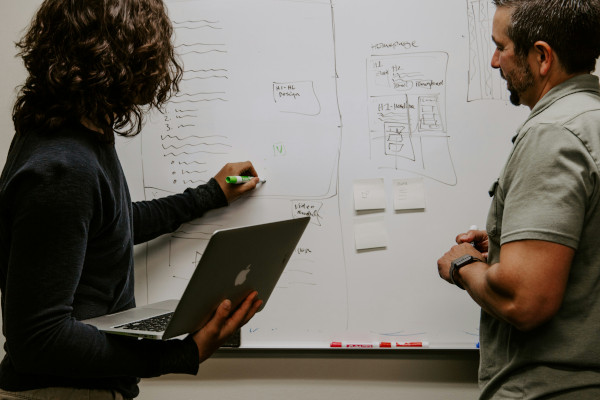
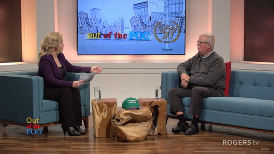

Research at the NLSA

The Newfoundland and Labrador Stuttering Association (NLSA) is proud to lead community-based research dedicated to improving accessibility, inclusion, and quality of life for people with communication disabilities in Newfoundland and Labrador. Our work centres the voices of people who stutter and their families, while engaging educators, health professionals, and community leaders in building more inclusive environments across the province.
Accessibility and Inclusion Project
Funded through a provincial Accessibility Grant, this project brings together a wide network of stakeholders to better understand the barriers faced by people with communication disabilities—and to help create meaningful, community-driven change.
Our research includes:
- A province-wide survey examining accessibility, participation, and the impact of stuttering and other communication differences in NL.
- Interviews with individuals, families, and professionals to gather lived experiences and identify practical solutions.
- Workshops delivered in communities across the province to share findings, promote inclusive practices, and strengthen local networks.
- Knowledge mobilization through the Some Stutter, Luh! podcast, which amplifies community voices, discusses project insights, and shares stories of lived experience. With hundreds of subscribers and a growing global audience, the podcast helps us conduct research with people with communication disabilities rather than on them.

Our Commitment
This research is grounded in collaboration, empowerment, and community engagement. By connecting research with action, the NLSA aims to build stronger grassroots networks in communities across Newfoundland and Labrador and to create resources that support all individuals facing communication barriers—locally and beyond.